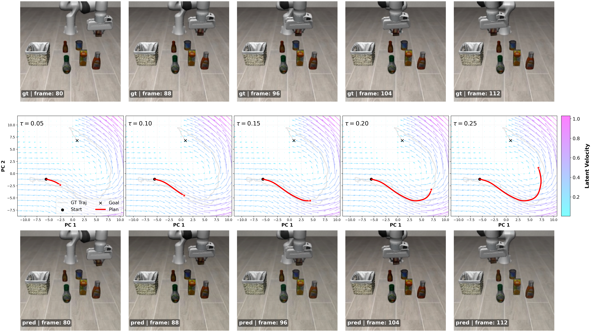
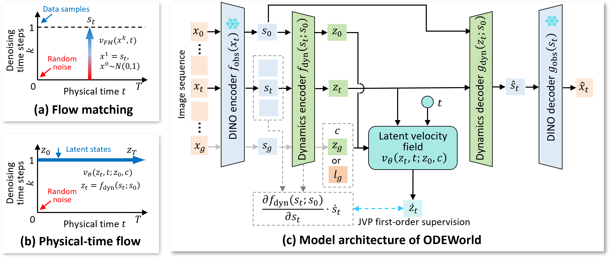
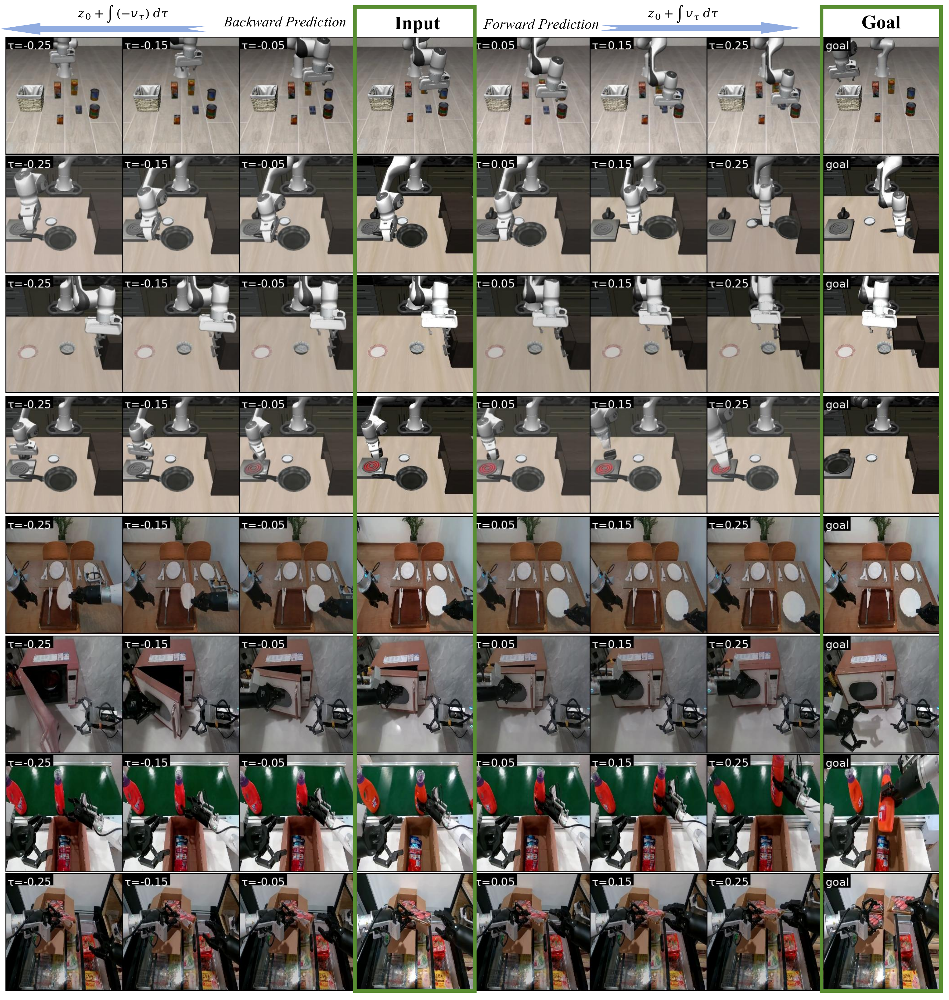
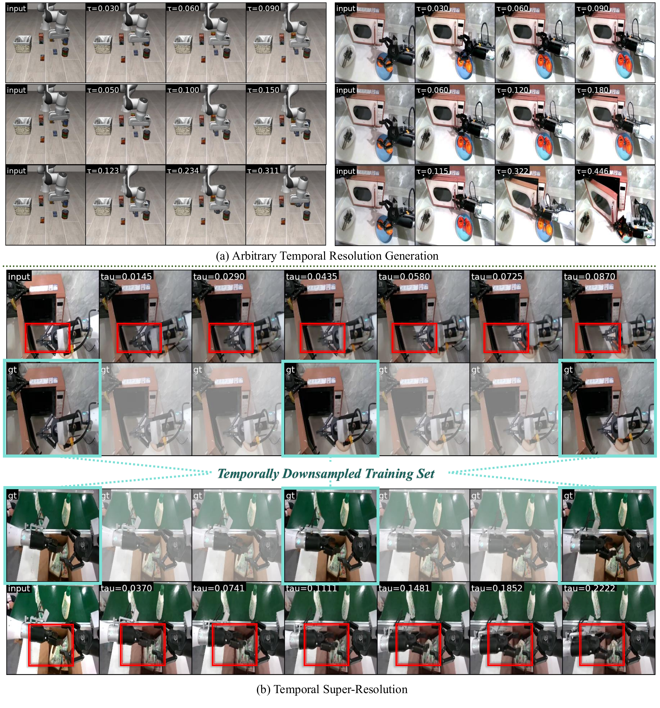
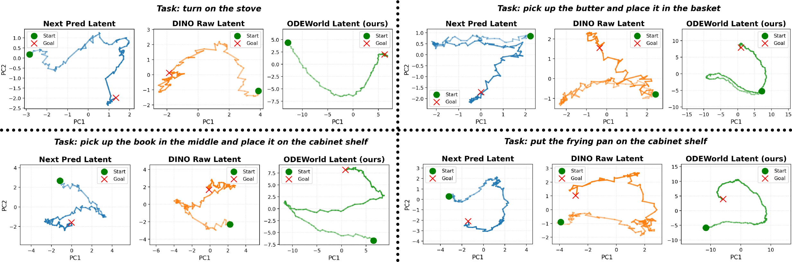
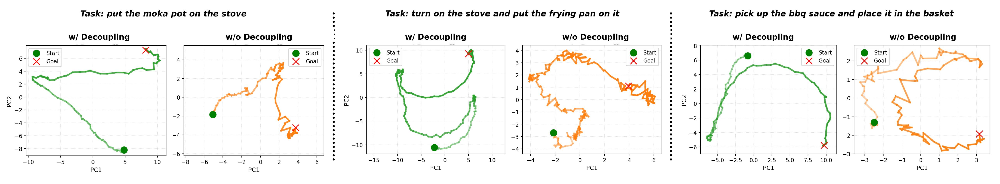
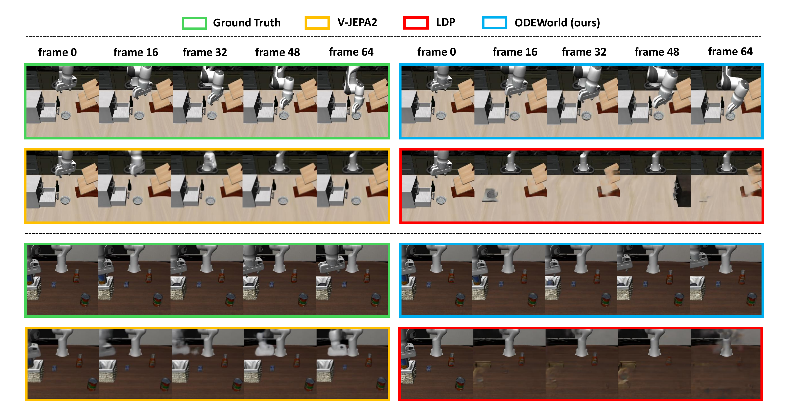

ODEWorld: A Continuous Predictive Architecture via Physical-Time Flow
Physical-Time World Modeling

PT-Flow models sequential dynamics as a continuous latent velocity field in physical time, rather than fixed discrete next-step prediction.
- The prediction of the future can be recast as temporal integration via an ODE solver in the compressed latent space.
- Supports arbitrary timestamps and even backward prediction through ODE integration, which is impossible for most discrete-time models.
- Compact latent planning enables efficient rollout for both video generation and control guidance.
Critical Designs
The core idea of PT-Flow is to capture the underlying dynamics as a continuous velocity field within a proper latent space. Let \( s_t \in \mathbb{R}^{d_s} \) denote the state input at physical time \( t \), and \( z_t \in \mathbb{R}^{d_z} \) be the latent representation of \( s_t \). Here, \( t \) represents the physical time elapsed after starting at the initial state \( s_0 \). The dynamics are then modeled by learning a time-dependent velocity field via an ODE formulation.
To enable such continuous-time modeling, PT-Flow features two key designs:
(1) Dynamical Representation Decoupling. PT-Flow isolates time-varying dynamics from static content by learning initial-state-conditioned dynamics encoder \( f_{\text{dyn}} \) and decoder \( g_{\text{dyn}} \), enabling the latent to focus on dynamics while static context is handled through conditioning.
(2) Direct First-Order Supervision. PT-Flow directly supervises the latent velocity field with the approximated ground truth latent velocities through an elegant Jacobian-vector product (JVP) projection. Note that the time derivative of the latent satisfies:
As \( s_0 \) is time-invariant, hence \( \frac{d s_0}{d t} = 0 \) and the related term vanishes. This enables us to introduce the following learning objective for the latent velocity field \( v_{\theta} \), which directly supervises it with the approximated ground-truth latent velocities \( \dot{z}_t \).
ODEWorld: Latent World Modeling via PT-Flow
We instantiate the PT-Flow paradigm as ODEWorld, a highly versatile and efficient continuous-time predictive architecture for both high-fidelity video generation and effective robotic policy learning. Apart from building PT-Flow, we first employ a frozen DINOv2 encoder as our vision backbone \( f_{\text{obs}} \) and a dedicated image decoder \( g_{\text{obs}} \) to reconstruct DINO features back to images \( \hat{x}_t \) for video generation. We further embed PT-Flow within the DINO feature space.

In our experiments, we find that a single token is sufficient to model \( z_t \) while achieving strong performance. Specifically, \( z_t \in \mathbb{R}^{1 \times 768} \) is highly compact compared to \( s_t \in \mathbb{R}^{16 \times 16 \times 768} \) in the original DINO space. More importantly, this result further supports the key insight of latent world modeling: raw pixels contain substantial redundancy, while the underlying dynamics can be effectively captured by a much smaller latent representation.
Bidirectional & Any-Resolution Generation

Bidirectional generation. Continuous-time formulation enables both forward and backward prediction with physically plausible motion.

Any-resolution temporal generation. ODEWorld supports flexible temporal speed and can recover missing intermediate observations.
Latent Smoothness Experiments
Latent space analysis.We compare the latent space of ODEWorld against the raw DINO feature space and the latent space of a discrete next-step predictive baseline. PCA visualizations of latent trajectories across multiple LIBERO tasks show that ODEWorld produces the smoothest latent trajectories. Crucially, while improving dynamical smoothness, ODEWorld preserves a manifold topology remarkably similar to that of the original DINO feature space.

Ablation on Dynamical Decoupling. We observe that Decoupling is critical for continuous dynamics modeling. Without separating static context from the state space, the learned latent trajectories become noisy and unstable. Conditioning on \( s_0 \) enables the latent representation to focus on dynamics, leading to smooth and meaningful latent flows.

Quantitative Comparisons for Video Generation
Evaluation of Quality and Efficiency. ODEWorld consistently outperforms baselines in both pixel-level and perceptual metrics across short- and long-term horizons, while achieving higher inference speed and a smaller model size.
| Method | Short Horizon @16 frames | Long Horizon @64 frames | Params. ↓ | ||||
|---|---|---|---|---|---|---|---|
| PSNR ↑ | LPIPS ↓ | FPS ↑ | PSNR ↑ | LPIPS ↓ | FPS ↑ | ||
| LDP | 16.33 | 0.489 | 0.906 | 16.27 | 0.461 | 0.253 | 110.9 M |
| V-JEPA 2 | 17.60 | 0.157 | 8.118 | 16.47 | 0.166 | 1.615 | 452.34 M |
| ODEWorld (Ours) | 20.53 | 0.109 | 33.67 | 19.46 | 0.134 | 13.83 | 86.08 M |
Comparison of Generated Samples. ODEWorld enables long-horizon video generation, producing temporally coherent and physically plausible videos that closely match the ground-truth observations. In contrast, baseline methods often suffer from blurry visual predictions and hallucinations in long-horizon generation.

Quantitative Comparisons for Policy Learning
ODEWorld for Policy Learning. We assess how ODEWorld can empower downstream policy learning by inferring latent subgoals as guidance. We instantiate three guidance paradigms: (1) velocity-conditioned policy \( \pi(a \mid z, c, v) \), (2) single-subgoal policy \( \pi(a \mid z, c, \hat{z}_{\tau}) \), where \( \tau = 0.25 \), (3) sequential-subgoal policy \( \pi(a \mid z, c, \{\hat{z}_{\tau_i}\}_{i=1}^{n}) \), where \( n = 5 \), \( \tau_i = 0.05 i \), where subgoals are generated via ODE integration. \( c \) denotes image goal and language instruction. Results show that all ODEWorld variants outperform baselines on LIBERO-LONG tasks, with the sequential-subgoal paradigm achieving the highest success rate. This performance gain demonstrates the high-fidelity temporal consistency of ODEWorld rollouts. and such consistent sequential subgoal guidance effectively benefits downstream policy learning.
| Method | 1 | 2 | 3 | 4 | 5 | 6 | 7 | 8 | 9 | 10 | Avg. Suc ↑ |
|---|---|---|---|---|---|---|---|---|---|---|---|
| GLCBC | 83.3 | 93.3 | 83.3 | 93.3 | 76.6 | 63.3 | 73.3 | 83.3 | 50.0 | 80.0 | 78.0 |
| SuSIE | 83.3 | 63.3 | 96.6 | 100.0 | 83.3 | 83.3 | 83.3 | 39.9 | 53.3 | 76.6 | 76.3 |
| Seer | 88.3 | 90.0 | 91.6 | 81.6 | 85.0 | 65.0 | 86.6 | 80.0 | 51.6 | 66.6 | 78.6 |
| ODEWorld (Velocity) |
80.0 | 93.3 | 76.6 | 100.0 | 73.3 | 80.0 | 83.3 | 86.6 | 66.6 | 83.3 | 82.3 |
| ODEWorld (Single subgoal) |
86.6 | 86.6 | 86.6 | 96.6 | 86.6 | 86.6 | 80.0 | 83.3 | 46.6 | 86.6 | 82.6 |
| ODEWorld (Sequential subgoals) |
90.0 | 96.6 | 90.0 | 100.0 | 73.3 | 90.0 | 76.6 | 90.0 | 60.0 | 80.0 | 83.6 |